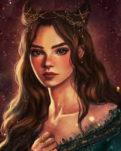
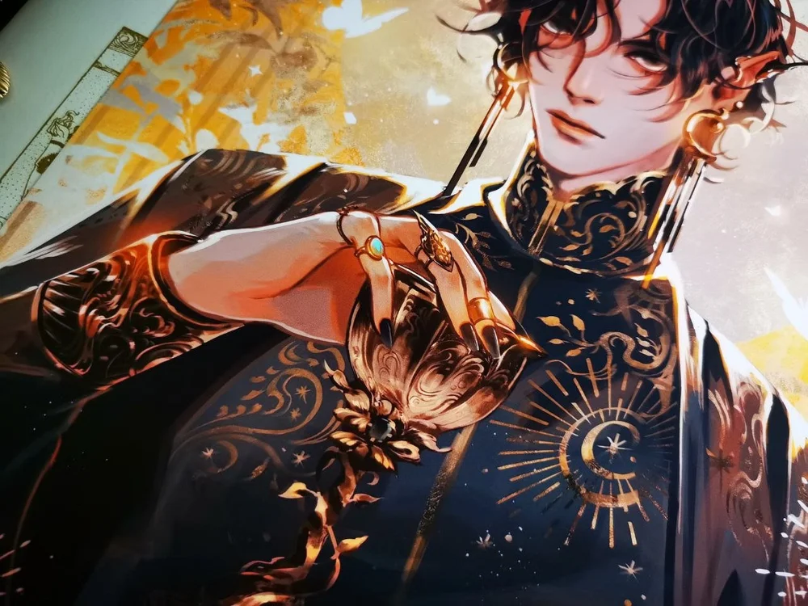

The Cruel Prince by Holly Black
The Cruel Prince stars Jude Duarte, a human raised in the fey world alongside her twin sister. Prince Cardan is the the cruelest son of the High King. This book is a true enemies-to-loves romance. Jude absolutely despises Cardan, but they are forced to work together when nearly everyone in the royal court is killed, leaving Cardan the sole heir.
Fae / Enemies-to-Lovers
This is a 3-book, completed series (The Folk of the Air):
- The Cruel Prince
- The Wicked King
- The Queen of Nothing
Book Trailer
Main Characters in The Cruel Prince
There are really only two main leads in this novel/series. The book is told primarily in Jude's perspective.
Jude Duarte

(Later) High Queen of Elfhame (the first human queen of the fey)
Jude was raised by Madoc, the Grand General of Elfhame. As such, she is a very skilled fighter. She is determined to prove herself in the fey world, where she is often bullied and mistreated because of her human nature.
Cardan Greenbriar

Prince of Elfhame / (Later) High King of Elfhame
Cardan is the male lead character of the series. He is the ringleader of his group of friends, who torment Jude and her sister; however, he is always there to protect her and keep them from going too far. He is fascinated by Jude, from her human features to the way she behaves, so much so that is disgusts him.
Quotes
Powerful lines in the novel that will encourage you to start reading! If you've already read the series, take the time to test your knowledge. Who spoke the below lines?